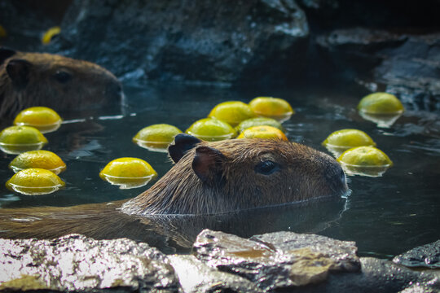

D'où vienne les capybaras?
Ces rongeur son originaire des forets épaisse ou des forêts tropicales l'amérique du Sud.
Caractéristique particulière du capibara.
-
1- Le capybara est connue comme le plus gros des rongeures du reign animal
-
2- Le capybara est un mammifère semi-aquatique et donc un très bon nageur. Il est capable de dormire submerger dans l'eau si il garde le bout de son nez a la surface.
-
3- Malgré leur phisic imposant les capybaras sont des animeaux très agile. Ils sont capable de courir a une vitesse de 35 kilometre par heur.
-
4- Les capybaras sont extrêmement sociable et forme des groupes qui peuvent atteindre les 100 individue
-
5- Ils vivent entre 8 et 10 ans.

un capybara qui relaxe dans l'eau
un capybara qui ce detand dans l'herbe